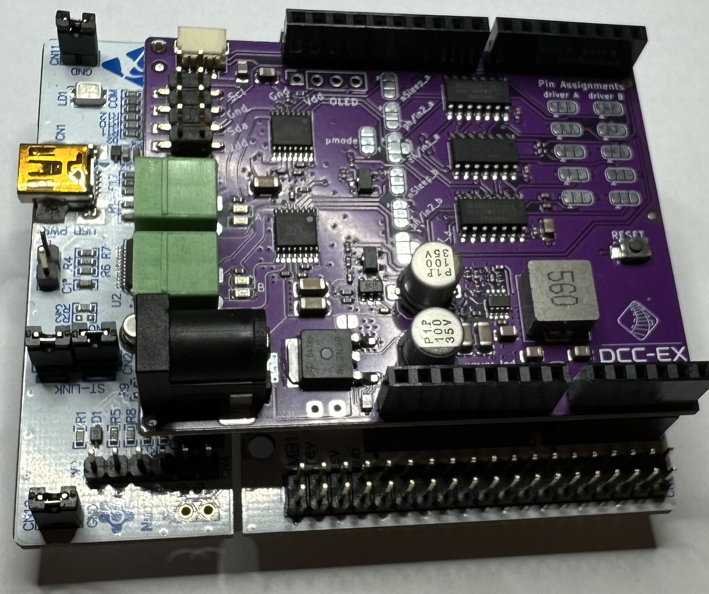

{kind=link}
DCC-EX EX-MotorShield8874 RevA

Designed in conjunction with the DCC-EX development team, the EX‑MotorShield8874 is extremely simple to use with all current and future generations of EX‑CommandStation hardware. It also safely powers the Command Station motherboard via the same single barrel jack DC input voltage that powers the track. It is rated at a very generous peak 5A of load per channel using Texas Instruments DRV8874 MOSFET technology. This board is the new standard by which we compare other boards.
{kind=link}
{kind=link}
What Is It?
The EX-Motorshield8874 is pin compatible with the original Arduino Motor Shield Rev3 but provides significantly improved electrical performance for driving higher loads, and improved usability.
Rated for 5 Amps of continuous output current
No need to cut traces or bend out pins for stacking on the EX-CommandStation
2 outputs (Main and Programming Track or 2 Mains)
Single power supply input powers the shield, the Arduino, and the track (motor output)!
5V and 3.3V compatible
Virtually no voltage drop, even at high currents
I2C header and STEMMA Qwiic connector for accessories (displays, port expanders, servo boards, etc.)
Reverse polarity protection
Fault detection in addition to overcurrent reporting for extra safety
Alternative power in and out solder pads for different connector types
Stackable (Support multiple Power Districts)
Optional OLED header to connect a display directly to the shield
The EX-Motorshield8874 is based on two DRV8874 H-bridge motor drivers with integrated current sensing from Texas Instruments (TI). It is used to drive inductive loads like relays, solenoids, DC and stepping motors, as well as provide the DCC signal and power to the model railroad tracks.
Powering of Arduino boards is possible due to the on board DC/DC buck converter, supporting a wide input supply range from 9 to 30V. The reverse polarity protection prevents damage to the circuit and its components in case the power supply is accidentally connected backwards.
The board’s 5V and 3V3 friendly design makes it suitable for a broad range of Arduino compatible platforms, with an override that compensates for designs with incomplete support (such as an incorrect IORef voltage).
This Shield features a status LED for supply, which provides a visual indication of the power supply status in addition to LEDs to show each side of the A and B power outputs.
Why did we make it?
EX-Motorshield8874 is specifically designed for use with DCC-EX Command Station for controlling model railroads, but can also be used as generally better replacement for Arduino Motor Shield R3 in any device that needs to control a motor. We needed higher current capacity to power more motors/trains and have little to no voltage drop due to advanced MOSFET driver technology.
Note
The EX-MotorShield8874 was created through the gracious support and design facilities of Semify, who, along with DCC-EX, license it to manufacturers. The hardware design has been made open source for individual users and the schematics are available on the DCC-EX GitHub repository.
How can I get one?
Units may be purchased from the following sources:
In the US from the DCC-EX Tindie Store or…
from Smart Hobby, LLC. You can also find Smart Hobby on Facebook
In the UK from Chesterfield Model Making & Miniature Electronics
In Europe from Semify’s Tindie store (based in Austria)
In Australia and New Zealand and South East Asia from Millennium Engineering Pty Ltd (orders @ milleng.com.au)
and other manufacturers licensed by DCC-EX.
There are different options for the board such as fully assembled or in kit form where connectors and headers need to be soldered onto the board. Prices vary from around $34.95 to $39.90 in the US, to approximately £29.99 in the UK, €37 in Europe, and from Australia for $AU55.00. Prices do not include tax and shipping.
For quantities of 10 or less per annum, you may utilise a PCB manufacturing and assembly service such as JLCPCB without licensing fees. A donation to DCC-EX would be appreciated, so click the DONATE button! The production files are available on the DCC-EX GitHub.
Entrepreneurs wanting to use the design to offer commercial quantities to their local communities should contact Semify (service @ semify-eda.com) to arrange a bulk purchase or DCC-EX (support @ dcc-ex.com) for a license to manufacture. Licensing includes donating a royalty to DCC-EX per board sold.
Assembly with EX-MotorShield8874
Assembly with the EX-MotorShield8874 is extremely simple, just plug the motor shield into your choice of Command Station motherboard. Unlike other motor shields, the EX-MotorShield8874 needs no jumpering, trace cutting, or pin bending! Just plug it in.
Shown here are examples of the shield plugged into Mega+WiFi, Nucleo-F411RE:
{kind=link}
{kind=link}
Example pics here!
1. Connect DC Power to Motor Driver
The EX-MotorShield8874 accepts a standard 2.1mm inside diameter DC barrel jack for DC power, with centre pin positive, and polarity protected for your safety. Acceptable voltages for correct DCC operation include 10-24VDC, but the shield can cope with 9-30VDC.
{kind=link}
Note
DO NOT connect power to BOTH the EX-MotorShield8874 barrel jack and the underlying Arduino motherboard via its DC barrel jack as you may damage your Arduino and/or EX-MotorShield8874!!
The EX-MotorShield8874’s DC barrel jack is the only power source required to power both the tracks and the EX‑CommandStation into which it is plugged. It supplies carefully regulated 7.2V DC power to the underlying Arduino R3 compatible motherboard via the VIN pin. This voltage is safely regulated down from the track power input to ensure Command Station motherboards will stay cool and work well. There is no need to power the Command Station via its barrel jack, or USB power. It is safe, however, to connect the USB cable as it will not create a conflict.
We suggest 10-12VDC for Z & N Scale, 14-16VDC for OO, HO, and 18-19VDC for O, or up to 24V for G scales because the EX-MotorShield8874 does not drop voltage like the standard L298 based motor shields. Note that good quality, fully-enclosed and double-insulated switch mode power supplies are best, and we suggest laptop power bricks as ideal in this role as they typically output 3-20A easily and safely.
Note
Please note that as the EX-MotorShield8874 can supply up to 5A of track power per channel, a power supply of more than 10A peak capacity is required to run both channels at full peak current and have power left for the Command Station.
1. Turn on Power to the Motor Driver
Once satisfied the EX-MotorShield8874 is seated properly on the Command Station motherboard, you can apply power to the EX‑CommandStation. You ought to see a green LED light up indicating power is being supplied to the motherboard.
{kind=link}
3. Connect Track to Motor Driver
Track power for A (MAIN) and B (PROG) tracks can be connected now using the green track connectors. These unplug conveniently to allow easy swapping in and out of the EX‑CommandStation. Make sure to tighten the screws onto the wire in the connectors before applying power.
{kind=link}
Notice that A (MAIN) is on the left as you look at the connectors, and B (PROG) is on the right, next to the DC barrel jack.
Next steps
Click here to learn how to connect the WiFi shield to your EX‑CommandStation, or alternatively connect a controller like JMRI or our EX‑WebThrottle by using the serial cable to connect between your computer and the EX‑CommandStation as outlined in the Getting Ready section of the EX‑Installer page. Note that when configuring the EX-CommandStation you will want to select EX8874_SHIELD as the motor board during configuration.
For more detailed and technical information, follow the link to the EX-MotorShield8874 on Github It also includes the schematic and the KiCad project files.